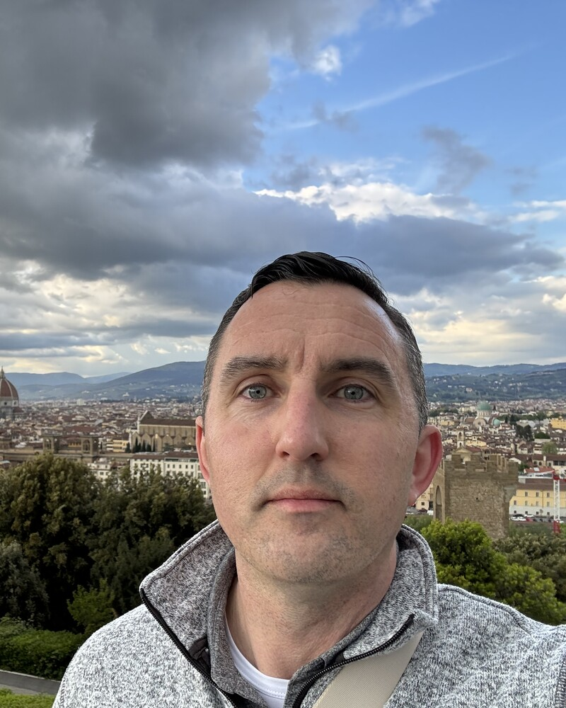

RSA Conference 2026 · San Francisco
Building security programs that let startups scale without breaking trust.
Save My Contact
I join startups early — often before there's a security team or even a security anything — and build programs that scale with the business. Four programs built from scratch, zero audit findings across SOC 2, PCI, and ISO, and fifteen years of proving that security doesn't have to slow you down.
4
Security programs built from scratch
0
Findings across SOC 2, PCI, ISO audits
15
Years building security programs
What I'm Thinking About